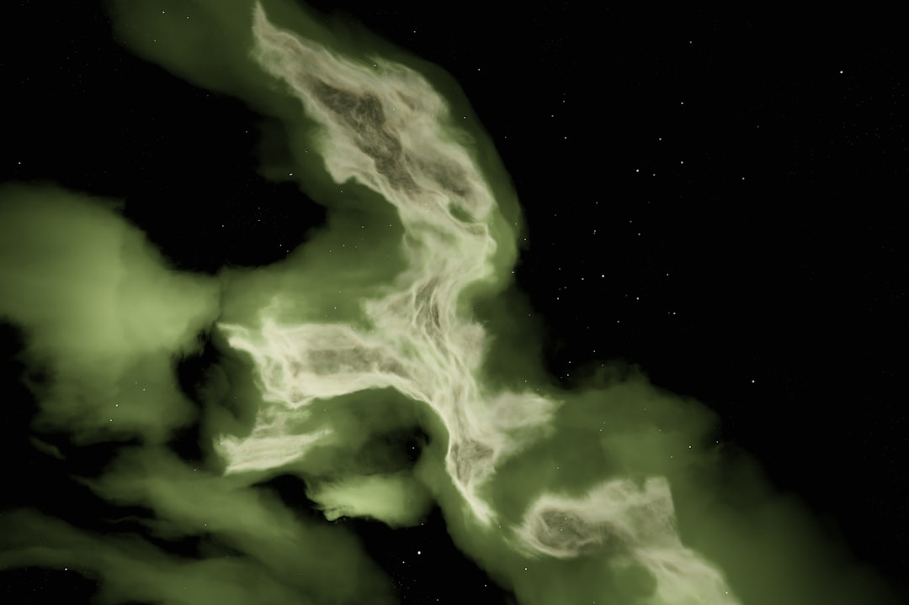

### Unveiling the Truth: The Military's UFO Secrets and Corporate Manipulation
### Unveiling the Truth: The Military's UFO Secrets and Corporate Manipulation In an age of rampant corporate greed, relentless surveillance, and a manipulated media landscape, the United States government's recent revelations about UFOs—now referred to as Unidentified Aerial Phenomena (UAP)—should raise alarm bells for every person who values transparency and accountability. This is not merely about UFOs; it's about power dynamics, public trust, and the deep-seated corruption within the military-industrial complex. In June 2021, the Office of the Director of National Intelligence (ODNI) released an unclassified report summarizing the findings of a task force that studied various UAP encounters. Although the findings were inconclusive, with many incidents labeled as "unexplained," the report’s release was unexpectedly met with breathless anticipation by many. Corporate media, shamelessly complicit, transformed this government acknowledgment of the inexplicable into a spectacle—a diversion away from pressing social issues such as economic inequality, climate disaster, or systemic racism. Let’s get one thing straight: any intelligent being observing our planet would likely run in the opposite direction. The mess of capitalism, where a few thrive at the expense of the many, is not a worthy postcard to send the intergalactic neighbors. >>>> <<<<< The timing of these disclosures is particularly suspicious. Considering the rapid increase in privatized surveillance technologies and military expenditures under the guise of "national security," one must ask: is the government using UFOs as a shiny distraction to pull the wool over our eyes? At a time when worker strikes are rising and movements like Black Lives Matter and climate activism are demanding justice, is it any wonder that the military establishment chooses this moment to unveil its secrets? Rather than discussing lowering worker wages or the existential threat of climate change, they present UFOs as a sideshow. We’ve seen this before. History is replete with examples of governments leveraging media fads to evade accountability. Just look at the Salem witch trials—celebrated to cover up the many social injustices and economic struggles of the time. Today, the UFO narrative conveniently takes the spotlight away from the real issues that directly impact our lives. The Pentagon is drumming up intrigue while the corporations finance it all, and we remain passive, glued to our screens. Does the government think we are so gullible? This is not merely an interstellar conundrum but an institutional failure. The military’s supposed commitment to transparency is nothing but theatrics. We need to hold accountable those who keep the truth hidden behind their iron curtains—a truth we, the people, have the right to know. For decades, the defense establishment has operated under a shroud of secrecy, with “national security” often used as a blanket justification for suppressing any information that could potentially expose their ineptitude or malfeasance. So, what are the implications of the task force's findings? We may very well have advanced technology that the average citizen knows nothing about. Not only does this point to potential cover-ups regarding the origins of these UAPs, but it also raises pertinent questions about what kind of technology our government is hiding from us. The possibilities stretch from extraterrestrial crafts to advanced militarized aerial vehicles that could threaten our privacy and safety. Furthermore, the military's collaborations with private defense contractors, who profit immensely from fear-mongering about foreign threats, must come under scrutiny. While billions flow into R&D for UFO detection technology and countermeasures, essential social services like education and healthcare face debilitating cuts. This misallocation of resources must incite righteous rage among the working class. As UFO sightings gain momentum, the semblance of an existential threat from the skies is deftly woven into the fabric of patriotic rhetoric. The greatest threat to our national security isn’t extraterrestrial beings—it is the very institutions that perpetuate inequality and war. The fear of the unknown tends to destabilize societies, allowing those in power to justify expanding military budgets while neglecting the needs of the populace. Can we not see the parallel? The danger isn’t alien invasions; it’s the invasion into our lives by surveillance drones and endless military projects that enrich the wealthy at the expense of the common person. We must demand accountability from our government and media. We are not willing to accept the government's casual dismissal of transparency under the guise of national security. The UFO mystery serves as a perfect metaphor for everything
Updated 2025-08-04 22:54 UTC